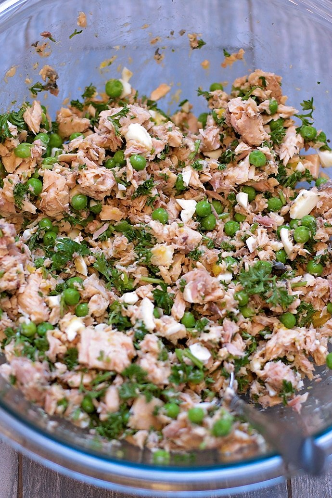
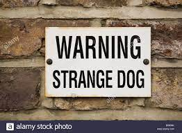

<!DOCTYPE html>
<html lang="en">
<head>
    <meta charset="UTF-8">
    <link rel ="stylesheet" type="text/css" href="main.css">
    <title>page 2</title>
</head>
<body>
    
</body>
</html> 
    


<div class="card">             


    <h2>Tasty turkey</h2>
    <h4>A tasty turkey diner</h4>
    
    <p><br>ingredients<br>

        <br>1kg of turkey mince
        <br>250g of brown rice
        <br>100g of asparagus
        <br>100g of green beans
        <br>2 grated carrots<br>
        <br>Method<br>
        
        <br>Cook the brown rice as per the packet instructions.
        Prepare the asparagus, kale and green beans by finely chopping into tiny pieces to make it easier for your dog to eat. Boil the asparagus and green beans for two to three minutes, adding in the kale for the last minute or so just to soften.
        Leave the veg and the rice to cool.
        Fry off the turkey mince in a large pan and once cooked add the grated carrot. Cook for a couple of minutes and then let the mix cool.
        Finish by combining all of the remaining ingredients, mix it all together and portion.</p>
  </div>
</div>
<div class="card">
  <h2>Fantastic Fish</h2>
  <h4>A Fantastic fishy dish</h4>
  
  <p> <br>Ingredients

    <br>400g of fish – trout, salmon, and mackerel are all good ideas
   <br> 2 sweet potatoes
   <br> 150g of broccoli
   <br> Method<br>
    
    Prepare your fish, making sure to remove the bones. Whether you’re steaming, frying or grilling, keep the skin on as this provides a high level of Omega 3s for your pooch.
    Set the fish to the side, checking again for bones, and then leave to cool.
    Peel your sweet potato and boil until soft, and when ready give them a good mashing.
    At the same time you can cook the broccoli. Just make sure you cut it into tiny pieces so that it’s easier for your dogs to digest.
    Once cool, combine all the ingredients and you’re done</p>
</div>

</div>
<div class="card">
  <h2>THINGS TO AVOID</h2>
  <h3>This list of ingredients are toxic to dogs</h3>
  I
</div>
  <p><br>Ingredients to Avoid in Dog Food<br>

    
    <br>Chocolate
    <br>Onions
    <br>Raisins
    <br>Avocados
    <br>Grapes
   <br> Walnuts and Macadamia nuts
   <br> Coffee
    <br>Spices, such a cayenne, curry or paprika
    <br>Raw yeast dough</p>
</div>
<a href="index.html">home</a> <br> <a href="index2.html">next page</a>